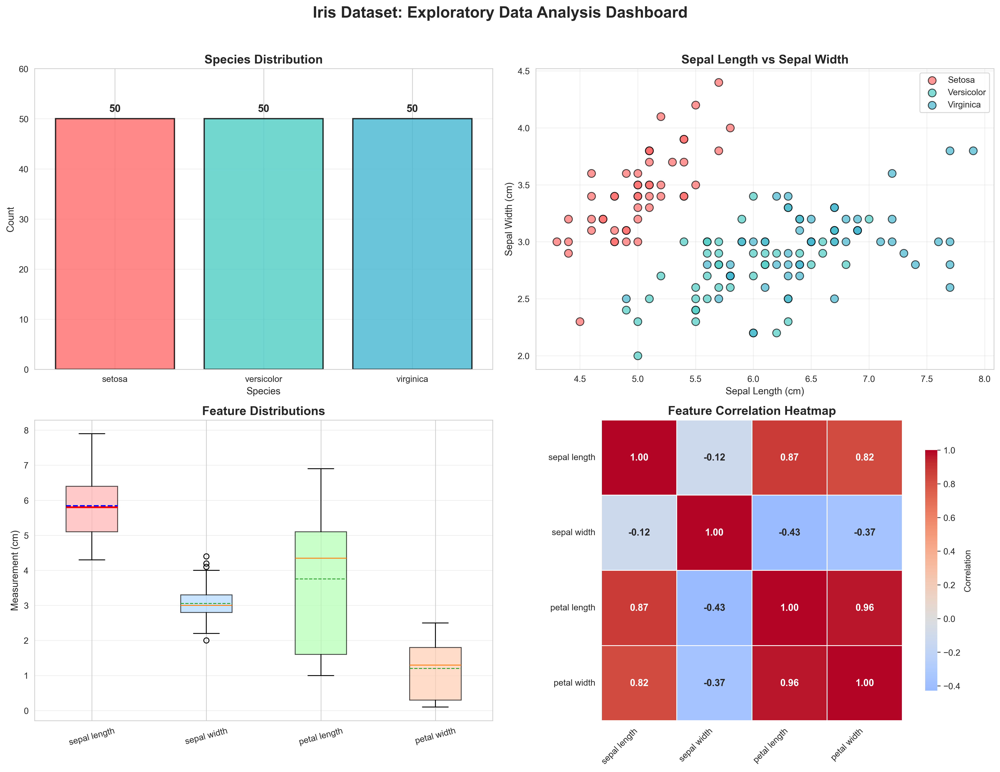
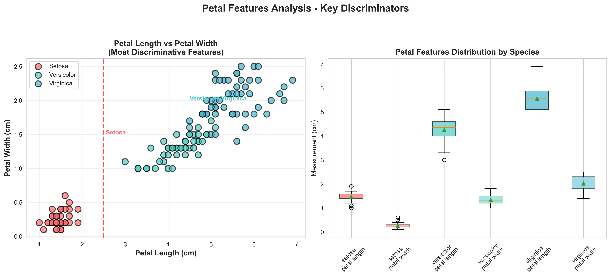
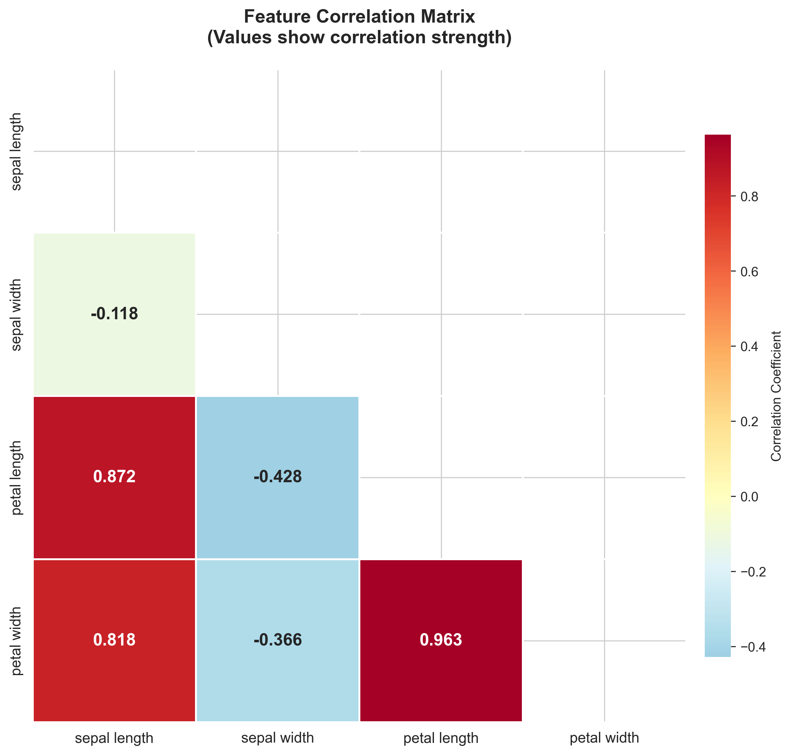
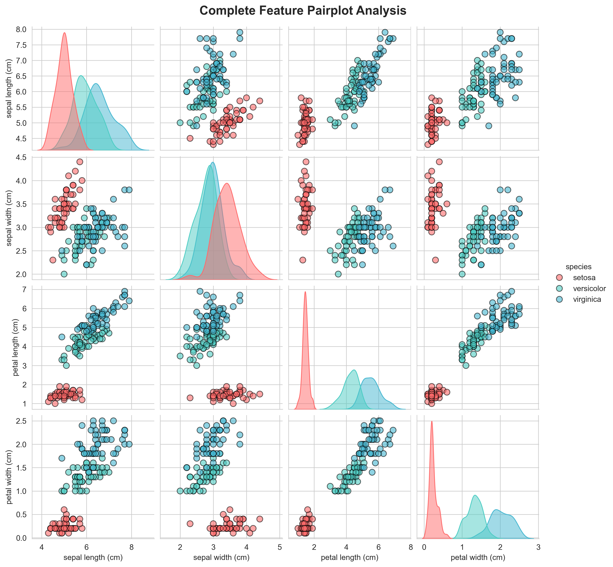
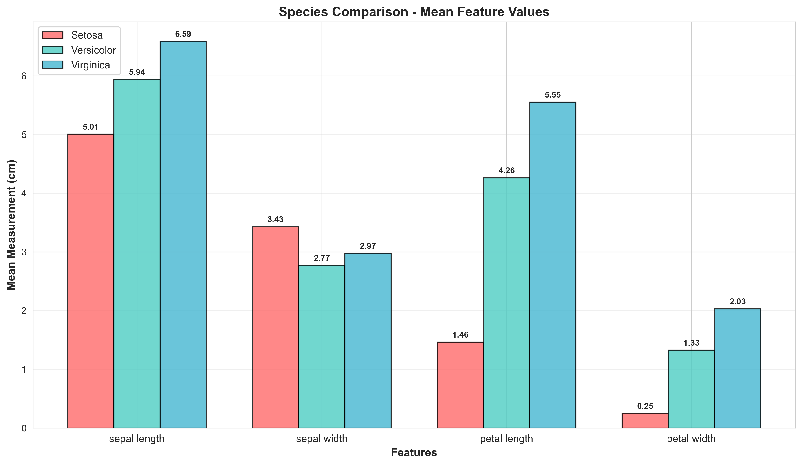
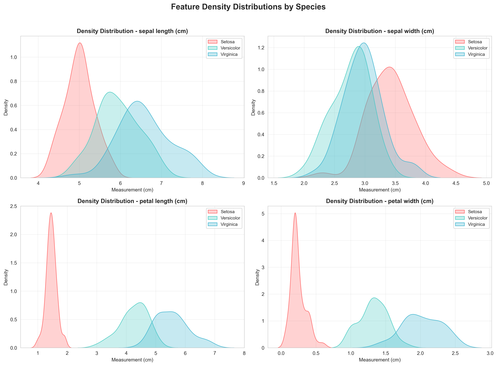

📊 Dataset Overview
✓ Data Quality Assessment: The dataset is perfectly clean with no missing values or duplicate rows. All features are numerical and ready for analysis.
📈 Species Distribution
✓ Perfectly Balanced Dataset: Each species has exactly 50 samples, making this dataset ideal for classification tasks without class imbalance issues.
📐 Descriptive Statistics
| Statistic |
Sepal Length (cm) |
Sepal Width (cm) |
Petal Length (cm) |
Petal Width (cm) |
| Mean | 5.84 | 3.06 | 3.76 | 1.20 |
| Std Dev | 0.83 | 0.44 | 1.77 | 0.76 |
| Min | 4.30 | 2.00 | 1.00 | 0.10 |
| 25% | 5.10 | 2.80 | 1.60 | 0.30 |
| 50% (Median) | 5.80 | 3.00 | 4.35 | 1.30 |
| 75% | 6.40 | 3.30 | 5.10 | 1.80 |
| Max | 7.90 | 4.40 | 6.90 | 2.50 |
🔬 Species Comparison (Mean Values)
| Species |
Sepal Length |
Sepal Width |
Petal Length |
Petal Width |
| Setosa | 5.01 cm | 3.43 cm | 1.46 cm | 0.25 cm |
| Versicolor | 5.94 cm | 2.77 cm | 4.26 cm | 1.33 cm |
| Virginica | 6.59 cm | 2.97 cm | 5.55 cm | 2.03 cm |
🔗 Correlation Analysis
|
Sepal Length |
Sepal Width |
Petal Length |
Petal Width |
| Sepal Length | 1.000 | -0.109 | 0.872 | 0.818 |
| Sepal Width | -0.109 | 1.000 | -0.421 | -0.357 |
| Petal Length | 0.872 | -0.421 | 1.000 | 0.963 |
| Petal Width | 0.818 | -0.357 | 0.963 | 1.000 |
⚠️ Multicollinearity Detected: Petal length and petal width show very high correlation (0.96). This indicates feature redundancy that should be considered for modeling.
📊 Statistical Significance (ANOVA)
| Feature |
F-Statistic |
P-Value |
Significant at α=0.05? |
| Sepal Length | 119.26 | 0.000000 | ✓ Yes |
| Sepal Width | 49.16 | 0.000000 | ✓ Yes |
| Petal Length | 1180.16 | 0.000000 | ✓ Yes |
| Petal Width | 960.01 | 0.000000 | ✓ Yes |
📈 Statistical Finding: All features show statistically significant differences between species (p < 0.001), confirming that each measurement contributes meaningful information for classification.
⭐ Feature Importance Ranking
| Rank |
Feature |
Discrimination Score |
Importance |
| 1 | Petal Length | 1180.16 | ⭐⭐⭐⭐⭐ |
| 2 | Petal Width | 960.01 | ⭐⭐⭐⭐⭐ |
| 3 | Sepal Length | 119.26 | ⭐⭐ |
| 4 | Sepal Width | 49.16 | ⭐ |
💡 Conclusion: Petal Length is the most discriminative feature, while Sepal Width is the least useful for species classification.
💡 Key Findings
🔍 Finding 1: Setosa is Perfectly Separable
Setosa can be distinguished from other species using petal length (max 1.9cm vs min 3.0cm) or petal width (max 0.6cm vs min 1.0cm) alone. No overlap exists!
🎯 Finding 2: Petal Features are Most Important
Petal length and width have the highest discriminative power (ANOVA F-statistics > 960), while sepal width is the least informative feature (F-statistic = 49.16).
⚠️ Finding 3: Feature Redundancy Exists
Petal length and petal width are highly correlated (r = 0.96), suggesting redundancy. For dimensionality reduction, consider using only one petal feature.
🔄 Finding 4: Versicolor-Virginica Overlap
While completely separable from Setosa, Versicolor and Virginica show overlap in sepal measurements and some petal measurements, requiring more complex decision boundaries.
📸 Visualization Gallery

📊 EDA Dashboard - Main 4-in-1 Analysis

🌸 Petal Features - Most Discriminative

🔗 Correlation Heatmap

📈 Complete Feature Pairplot

📊 Species Comparison - Mean Values

📐 Density Distributions by Species
🎯 Recommendations for Modeling
✓ Recommended Approach:
- Prioritize petal features (length and width) for classification
- Consider removing one petal feature to reduce multicollinearity
- Sepal width can be deprioritized or removed from the model
- Linear models (Logistic Regression, SVM) will work well for Setosa vs others
- Non-linear models (Random Forest, XGBoost) may be needed for Versicolor vs Virginica
- The dataset is ready for modeling with NO preprocessing required!
📋 Conclusion
The Iris dataset is an excellent starting point for machine learning due to its clean structure, balanced classes, and clear patterns. Through this EDA, we have discovered that:
- The dataset is perfectly balanced with 50 samples per species
- No missing values or quality issues exist
- Petal features are the most discriminative for species classification
- Setosa is linearly separable from other species
- Petal length and width are highly correlated (redundant)
- Sepal width is the least informative feature
These insights provide a solid foundation for building classification models. The EDA process has successfully revealed the underlying structure of the data and identified which features will be most valuable for predictive modeling.